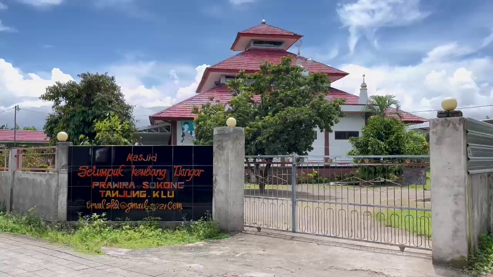

Prawira Village
Prawira Village
Dusun Prawira merupakan salah satu dusun adat di Desa Sokong yang masih dilestarikan. Dahulu, dusun ini menjadi tempat berkumpulnya para punggawa Kedatuan Sokong yang pernah ada di wilayah ini. Hingga kini, jejak sejarah kedatuan masih bisa ditemukan dalam berbagai tradisi, bangunan, dan benda-benda peninggalan di dusun ini.
Bale Gede
Bale Gede, yang juga dikenal sebagai Bale Beleq, adalah bangunan bersejarah yang digunakan sebagai tempat penyimpanan barang-barang purbakala peninggalan Kedatuan Sokong. Bangunan ini memiliki nilai sakral bagi masyarakat setempat dan masih digunakan dalam berbagai ritual adat.
Setiap dua kali dalam seminggu, masyarakat melaksanakan ritual yang disebut Maturan, yaitu ritual persembahan sebagai bentuk penghormatan terhadap leluhur. Selain itu, terdapat Ritual Memarek, yang dilakukan setiap bulan Agustus. Ritual ini diawali dengan ziarah ke makam leluhur Kedatuan Sokong, lalu diikuti dengan pembersihan benda-benda peninggalan yang disimpan di dalam Bale Gede. Beberapa peninggalan-peninggalan bersejarah yang ada di Bale Gede, yaitu naskah-naskah kuno, Lontar, Al-Qur’an tulis tangan, perangkat ritual, dan masih banyak lagi.
Masjid Setumpuk Kembang Dangar
Masjid Setumpuk Kembang Dangar adalah masjid bersejarah yang terletak di Dusun Prawira. Keunikan masjid ini terletak pada namanya, yang tidak seperti kebanyakan masjid yang menggunakan nama bernuansa Arab. Nama Kembang Dangar diambil dari Kedatuan Sokong Kembang Dangar, yang pernah berkuasa di daerah ini.
Masjid ini memiliki beberapa peninggalan bersejarah yang masih terjaga hingga kini, di antaranya:Tiang Saka Tunggal, Tiang tunggal asli yang berada di tengah bangunan masjid, melambangkan kekuatan dan keteguhan masyarakat adat.
Mimbar dengan simbol naga, Melambangkan langit yang menaungi manusia di bumi. Dahulu, terdapat ukiran kura-kura/penyu di bawah mimbar yang melambangkan bumi sebagai tempat berpijak manusia.
Jungkat (Tongkat Khotbah), Tongkat yang digunakan oleh khatib saat menyampaikan khotbah Jumat.
Masjid ini memiliki beberapa peninggalan bersejarah yang masih terjaga hingga kini, di antaranya:

Bangaran dan Kulkul
Berugak
Di Dusun Prawira terdapat tiga berugak yang memiliki fungsi dan makna berbeda:
Berugak Periapan, Berfungsi sebagai tempat persiapan sebelum melaksanakan ritual adat.
Berugak Peroahan, Terletak di tengah dan digunakan sebagai tempat berzikir serta berdoa bersama saat ritual berlangsung.
Berugak Kekelat, Berada di posisi paling tinggi dan menjadi pusat upacara adat. Berugak ini digunakan dalam berbagai prosesi penting seperti upacara kematian, peringatan seribu hari, khitanan, dan prosesi pernikahan.
Setiap berugak memiliki filosofi tersendiri, mencerminkan tahapan-tahapan dalam kehidupan masyarakat adat. Fungsi berugak juga tidak hanya terbatas pada kegiatan spiritual, tetapi juga menjadi tempat musyawarah dan pertemuan penting bagi masyarakat setempat.
Setiap berugak memiliki filosofi tersendiri, mencerminkan tahapan-tahapan dalam kehidupan masyarakat adat. Fungsi berugak juga tidak hanya terbatas pada kegiatan spiritual, tetapi juga menjadi tempat musyawarah dan pertemuan penting bagi masyarakat setempat.
Dusun Prawira di Desa Sokong merupakan kawasan adat yang penuh dengan nilai sejarah, budaya, dan spiritual. Berbagai peninggalan seperti Bale Gede, Masjid Setumpuk Kembang Dangar, Bangaran, Kulkul, dan Berugak menjadi bukti bahwa adat dan tradisi masih dijaga dengan kuat oleh masyarakat setempat.
Selain kaya akan warisan budaya, Dusun Prawira juga memiliki kebun anggur yang menjadi daya tarik tersendiri bagi wisatawan. Kebun anggur ini tidak hanya berfungsi sebagai lahan pertanian, tetapi juga berpotensi dikembangkan sebagai wisata edukasi agrikultur. Selain itu, masyarakat Dusun Prawira juga menghasilkan produk kerajinan unik berupa kain dari batok kelapa. Kerajinan ini mencerminkan kreativitas dan kearifan lokal dalam memanfaatkan sumber daya alam untuk menghasilkan produk bernilai seni dan ekonomi tinggi.
Dengan keunikan sejarah, budaya, serta potensi ekonomi kreatif yang dimilikinya, Dusun Prawira menjadi salah satu destinasi wisata budaya yang menarik untuk dikunjungi wisatawan.
Selain kaya akan warisan budaya, Dusun Prawira juga memiliki kebun anggur yang menjadi daya tarik tersendiri bagi wisatawan. Kebun anggur ini tidak hanya berfungsi sebagai lahan pertanian, tetapi juga berpotensi dikembangkan sebagai wisata edukasi agrikultur. Selain itu, masyarakat Dusun Prawira juga menghasilkan produk kerajinan unik berupa kain dari batok kelapa. Kerajinan ini mencerminkan kreativitas dan kearifan lokal dalam memanfaatkan sumber daya alam untuk menghasilkan produk bernilai seni dan ekonomi tinggi.
Dengan keunikan sejarah, budaya, serta potensi ekonomi kreatif yang dimilikinya, Dusun Prawira menjadi salah satu destinasi wisata budaya yang menarik untuk dikunjungi wisatawan.
Gallery
Lokasi
KKN PMD Desa Sokong 2024-2025
© 2024 KKN PMD Desa Sokong - Universitas Mataram. Website ini dikembangkan sebagai upaya mendukung pengembangan Desa Wisata Sokong dengan menyediakan informasi wisata, budaya, dan produk lokal. Bersama kita wujudkan desa yang maju, berdaya, dan lestari. 🌿✨

Copyright © KKN PMD Desa Sokong 2024-2025